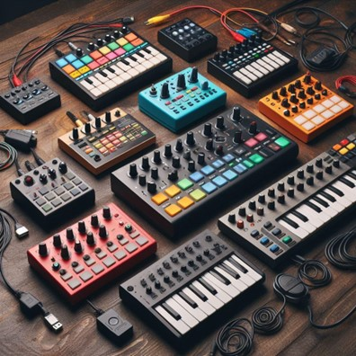

The Most Affordable MIDI Controllers

If you're looking for a MIDI keyboard that won't break the bank, you've come to the right place. In
this blog post, I'll share with you some of the most affordable MIDI keyboards on the market, what
features they offer, and then you’ll be learning piano chords for beginners in no time!
What is a MIDI keyboard?
A MIDI keyboard is a device that lets you control software instruments on your computer or mobile
device. You can play notes, chords, melodies, and even drums using a MIDI keyboard. It's like having
a whole orchestra at your fingertips.
A MIDI keyboard usually has keys, pads, knobs, sliders, and buttons that you can use to adjust
various parameters of your sounds. Some MIDI keyboards also have built-in speakers, microphones, or
audio interfaces for recording and playback.
Why do you need a MIDI keyboard?
A MIDI keyboard is a great tool for making music in any genre. You can use it to create beats,
melodies, harmonies, and more. You can also use it to perform live, record your ideas, or jam with
other musicians. MIDIScale has plenty of easy music to
learn on the piano with your MIDI keyboard.
A MIDI keyboard can help you improve your musical skills, such as playing by ear, improvising, and
composing. It can also inspire you to experiment with different sounds and styles.
How to choose a MIDI keyboard?
There are many factors to consider when choosing a MIDI keyboard, such as:
- Size: How many keys do you need? How much space do you have? Do you want a portable or a stationary keyboard?
- Features: What kind of controls do you want? Do you need pads, knobs, sliders, buttons, or other extras? Do you want a keyboard with built-in sounds or an audio interface?
- Compatibility: What software or hardware do you want to use with your keyboard? Do you need a USB or a MIDI connection? Do you need drivers or software to make it work?
- Price: How much are you willing to spend? What is your budget range? Do you want a cheap or a quality keyboard?
The Best Affordable MIDI Keyboards
To help you narrow down your options, I've compiled a list of some of the best affordable MIDI
keyboards on the market that will have you playing piano keys right away. These keyboards are all
under $110 at the time of writing and have good reviews from users and experts. Here they are:
- M-Audio Keystation 49 MK3 ($59): This is a classic and reliable MIDI keyboard. It has 49 full-size keys, pitch and modulation wheels, volume slider, and transport buttons. It also has a sustain pedal input for more control.
- Akai MPK Mini MK3 ($95): This is one of the most popular MIDI keyboards for beginners and pros alike. It has 25 mini keys, 8 pads, 8 knobs, and a joystick for pitch and modulation. It also comes with software and sounds to get you started.
- Nektar Impact GX49 ($99): This is a smart and user-friendly MIDI keyboard. It has 49 full-size keys, pitch bend and modulation wheels, transport buttons, and an LCD screen. It also integrates well with most DAWs and software instruments.
- Novation Launchkey Mini MK3 ($107): This is another compact and versatile MIDI keyboard. It has 25 mini keys, 16 pads, 8 knobs, and touch strips for pitch and modulation. It also has an arpeggiator and a chord mode for easy playing.
- Alesis V49 ($109): This is a simple and sleek MIDI keyboard. It has 49 full-size keys, 8 pads, 4 knobs, and 4 buttons. It also has pitch and modulation wheels for expressive playing.
These are some of the most affordable MIDI keyboards on the market. They all offer great value for money and functionality.
Join the mailing list to gain access to our bi-weekly newsletter and software updates!
This site is protected by reCAPTCHA and the Google Privacy Policy and Terms of Service apply.